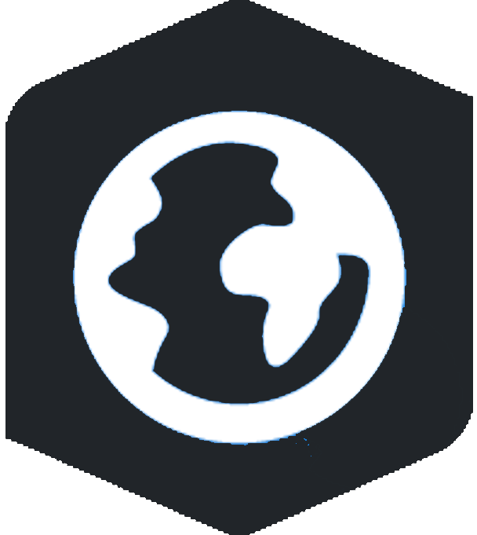
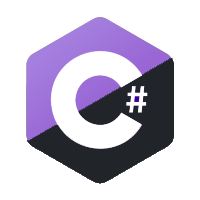

Making the Case for a Raise:
Introduction
I started at Pennoni in 2021 as an Application Integration Specialist and the only true developer in the company with a computer science degree. Since then, I have taken on a variety of roles within the company. Over the past few years, I have developed a unique skillset that encompasses full stack web development, API integrations, Python development, data analysis, GIS technology, and IT support. My ability to wear multiple hats has proven invaluable to the company, allowing us to take on projects that we would not have been able to service otherwise. Since joining, I have been able to contribute to various internal projects and help develop solutions for clients that were not previously possible within Pennoni.
My technical expertise and ability to work collaboratively with other teams has allowed us to expand our services and improve our project outcomes. I am proud of the work I have done here and excited about the opportunities that lie ahead.
According to the Bureau of Labor Statistics, employment of software developers is projected to grow 25 percent from 2021 to 2031, much faster than the average for all occupations. This indicates a high demand for skilled software developers in the job market. As the only employee with a computer science degree at Pennoni, my skills are valuable in meeting the demand for application development within the company.
As I reflected on my recent role change to Application Developer and the 7% raise that came with it, I realize that my skills and experience have grown significantly since I first joined the company. While I am grateful for the recognition and the larger-than-usual raise, I believe that it is important to ensure that my compensation is commensurate with the market value for software developers in the area, especially given my experience and the responsibilities that come with my new title. Therefore, I will be requesting a formal salary review in order to ensure that my salary is competitive and reflects my contributions to the company.
Title Change and Increased Responsibility
Since joining Pennoni, my role has evolved from mainly IT support work to taking on new responsibilities and becoming a much more skilled programmer. Initially, I was doing internal GIS work and hoping to grow into client work. However, I have since taken on client work from the GIS team and other teams in Pennoni, like with the PennDOT website, as well as contributing to new internal company projects such as our migration to modern SharePoint and use of our new tool, Workato, to connect our applications through APIs.
My confidence in seeking new projects and finding places to use my skills with Python to automate tasks has also increased significantly. Overall, my role has grown and expanded to include more responsibilities and challenges, leading to my recent title change and increased responsibility. All of this growth in responsibility has also happened while still maintaining my original IT support workload, where I am constantly rated as one of the fastest IT assistants to respond and resolve tickets from users.
As I continued to expand my skillset beyond IT support and GIS, I was able to leverage my experience to help other teams within Pennoni as well. For example, when Jack Reily in the bridge group needed assistance updating a python script, I was able to quickly transition from IT support to programming work and update the script to Python 3. I also helped with a tool his team was using called Eagle.io, using my knowledge of Python to assist the team with the problem of the tool's slow API loading. Additionally, when Cory and Joe Spadea approached me about a client request to record data from a photo360 career fair website and write it to a Google Sheet, I was able to use my problem-solving skills to find a solution using JavaScript. This initiative and willingness to take on new projects demonstrated my value to the company and contributed to my increased responsibilities and title change.
This year so far alone, I have been involved with the following projects:
- PennDOT Focus on Innovations 2023 website
- The PSEG PhotoMap tool
- The project for Baltimore Gas & Electric to connect their project data in Deltek to their reports in Fulcrum using our new API integration application, Workato
- The incorporating of a new, Geotech project map to our exisiting Deltek Web Map
- The PCD career fair analytics initiative
- And as of Friday, a project for the City of Bartow's Drainage Survey and GIS information to automate the creation of polylines on a ArcGIS web map to represent pipes from a excel sheet of structure data and gps information
Market Research
In the last year, I have been contacted by several companies seeking a software developer II or similar role. When I inquired about potential pay, the range offered was between 90k and 100k. While I have not pursued these opportunities, it speaks to the high demand for skilled software developers in the current job market. Additionally, it reinforces the value of my skills and experience as a full stack web developer, Python developer, data analyst, GIS technician, and IT support specialist, and how these skills can benefit Pennoni and its clients.
The chart below compares the average salary of a software developer in Philadelphia for each year I have been at Pennoni. Each year, adjusting for the average salary of the same amount of years experience I had. These averages were pulled from Glassdoor and Indeed and can be seen below.
Average Salary of Developer Roles in Philadelphia
Accomplishments and Contributions
Creation of the Deltek Web Map
As part of my contributions to the organization, I led an effort to map Pennoni's 70,000+ projects on an ArcGIS web map. This involved learning how to connect the Deltek and ArcGIS Python APIs to automate the process of adding new projects to the map every night, cleaning data, and smartly geocoding project addresses to avoid geocoding duplicates and save ESRI credits. This project has been a success, and various groups within the organization, including accounting, admins, and corporate communications, use it for their work. The map has allowed us to visualize and analyze project data in ways that were not possible before, leading to better decision-making and communication across the company.
The PennDOT Focus on Innovations Website
In my first year at Pennoni, I was given the opportunity to work on a website project for PennDOT. The previous year, Pennoni hired a contracting agency to do the work, but the project was a disaster. The agency took forever to complete the work, stole code, and delivered a subpar product that left the client PennDOT very upset. When Pennoni wasn't sure they could create the website for PennDOT, I stepped in and offered to create the website myself. This effort left the client extremely happy and impressed with the product, which also led to the project coming up again this year. I handled this client with good and cordial communication on progress and demonstrations of progress which was well received by them. This accomplishment showed my ability to take on a challenging project and deliver a high-quality product that met the client's expectations.
The Migration to Modern Sharepoint
Another major internal project I took on and spearheaded was our company's migration to modern SharePoint. I worked with each division in Pennoni to create a tailor-made SharePoint site for them, which has resulted in streamlined workflows and increased productivity. This involved coordinating with multiple groups at one time to create each site, to meet the deadline of one month that I was given to recreate all of the core sites in the new environment. I received much praise from many in the company for the final result and my ability to work with each group to fine tune their sites to provide the result they were looking for.
Becoming a Contractor for PSEG's techinical GIS services
When an employee left the GIS team in early 2022, I had the opportunity to step up and provide immediate assistance to our client, PSEG. Alongside a coworker, Ava, we quickly onboarded ourselves to their systems and completely overhauled a broken code base for an Advanced Metering Infrastructure (AMI) project that mapped meters, routers, and gateways in New Jersey. This project involved taking in new datasets every week, which required converting data from Excel sheets, performing data clean up, inserting data into Postgres tables, and then integrating it with an ArcGIS web map dashboard for viewing. Through this experience, I not only expanded my technical skills in GIS and database management, but I also demonstrated my ability to work under pressure, learn new technologies quickly, and collaborate effectively with a team. The success of this project led to additional opportunities with PSEG and further strengthened our relationship with the client.
Creation of the PSEG PhotoMap tool and balancing of major projects
I was integral to the creation of the PSEG PhotoMap tool on short notice, allowing PSEG surveyors to efficiently manage and utilize photo data through a python script with a GUI to get export files, such as: CSV, DXF, and KMZ files, an HTML leaflet map with project information, and integration with Arcgis web maps. This project was demoed at Pennoni's Digital Solutions call to others within our organization and received a lot of buzz, with multiple people asking for a similar version to be created internally. Despite a heavy workload that included the PennDOT Focus On Innovations website project, I was able to meet tight deadlines for both projects that have demanded the majority of time from December of 2022 up until this very week.
Skills and Competencies
Programming Skills

- 
- 
Web Development Skills
Database Skills
Skill Growth
Since joining Pennoni, I have taken a proactive approach to develop my technical and professional skills, resulting in significant growth across various areas. I have become extremely proficient with Python, Pandas, and data analysis, allowing me to automate several processes and deliver data-driven insights to our team. My knowledge in APIs and connecting systems has also grown significantly, which is evident in my work with Deltek, ArcGIS, and Fulcrum. I've had to become a full-stack web developer, where I have honed my skills in both front-end and back-end development, and also creating several sites in SharePoint. Additionally, I have improved my communication skills, both written and verbal, enabling me to communicate professionally and effectively with clients and colleagues through the projects I work on and my IT support assistance. Furthermore, I have become more skilled in database work, utilizing Microsoft SQL Server and Postgres to streamline data management processes.
Professional Development
Since joining the company, I have made a concerted effort to invest in my professional development in order to better serve the needs of our clients and the goals of the company. One of the ways I have done this is by attending the ESRI Dev Summit two years in a row, as well as the MAC URISA conference in Atlantic City and Philadelphia. These conferences have allowed me to bridge the knowledge gap between my technical skills and the GIS side of my work, as well as learn more about ESRI technologies. By doing so, I have been able to better leverage ESRI's suite of products to do better work for our company and our clients, and offer more options for improvements and customizations we can do internally. I am confident that this investment in my professional development has enhanced my skills and abilities, and has had a positive impact on the work I do for the company.
I have not just dedicated time to learning skills involving GIS however, I have made a concerted effort to learn the business applications involved in my IT support work, including Deltek Vantagepoint, Elevia products, and SharePoint. I have taken the initiative to become proficient in these tools, and have gone above and beyond in my work by creating custom SQL Server Reports for Deltek and spearheading our company's campaign to migrate to modern SharePoint. Through these efforts, I have not only enhanced my skills and abilities, but I have also made valuable contributions to our company by improving our Business Application infrastructure and providing better support to our employees.
Request for Raise
In light of my increased responsibilities and the value I bring to the company, I am formally requesting a raise from my proposed salary of $75,000 to $95,000 a year. As the only true software developer in the company, I have taken on various responsibilities and projects, often balancing multiple priorities at once. My contributions to the company have helped us win and retain clients and have led to the development of valuable internal tools and processes. Considering the average salary for any software developer role in the area, I believe a salary of $95,000 better reflects the skills and experience I bring to Pennoni. I understand this is higher than a normal yearly raise, but I believe it is necessary to ensure that my salary is more in line with the market and my contributions to the company.
My proposed raise of $95,000 is not only justified, but necessary for the continued success of Pennoni. With my programming skills and dedication to the company, I have been able to automate tasks and streamline processes, saving countless hours for both myself and other team members, which in turn, equates to money for Pennoni. Additionally, my ability to take on client work from various teams within the company, as well as lead new internal projects, has been invaluable. The potential for further growth and opportunities at Pennoni with my presence and skillset is immeasurable. A raise of this amount would not only be fair and appropriate given my contributions to the company thus far, but also crucial in retaining top talent and promoting continued success.
Conclusion
I want to express how much I love working at Pennoni. I am grateful for the challenging projects, supportive teams, and excellent leadership provided by my boss. Working at Pennoni has allowed me to develop my skills and expertise as a software developer, which has been very rewarding. I am happy to see how the projects I have worked on have benefited Pennoni and its clients. I have also made many friends here, and I have no intention of leaving. However, I believe that my pay needs to reflect the market around me and the role that I have grown into over the last two years. I hope that my request for a raise will be considered seriously, and I look forward to continuing to contribute to the success of Pennoni in the future.
Seeing my role title changed from "Application Integration Specialist" to "Application Developer" reflects the change in responsibilities I have taken on at Pennoni. This title change will make it easier for external clients and other companies to understand my role and will more accurately describe your duties. Additionally, with this title change, it would be reasonable for my pay to be adjusted to reflect the market value for software developers in the area with my experience and to match the salaries of those with similar titles and responsibilities within Pennoni.
In conclusion, I want to thank you for taking the time to review my case for a raise. I hope that my dedication to my work, my accomplishments, and my growth at Pennoni over the past two years are clear. I believe that my contributions to the company are significant, and I am excited to continue working with such a talented and dynamic team. Furthermore, I want to highlight that the very act of creating this website on my own time to present my case is a testament to my skills, creativity, and commitment to this company. I am confident that together, we can come to an agreement that reflects my value to the company and my skills as a developer. Thank you for considering my request.